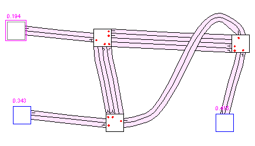
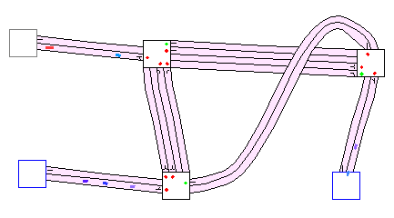
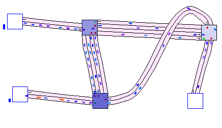
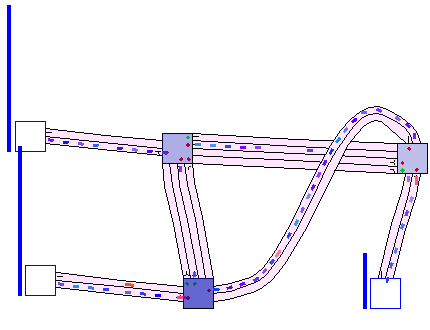
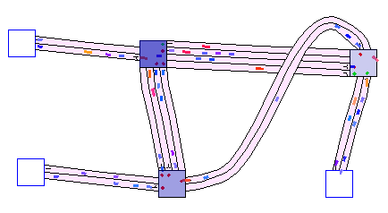
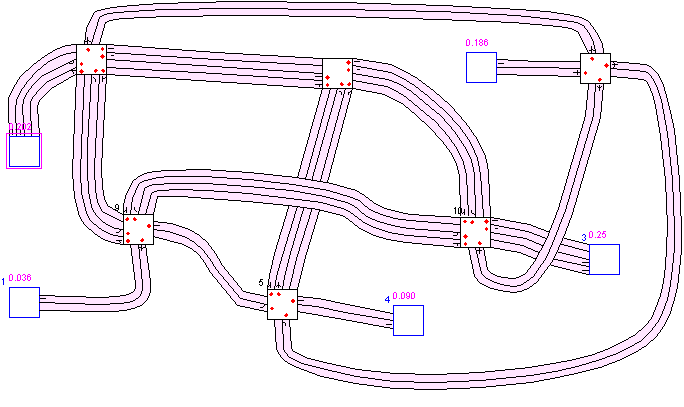
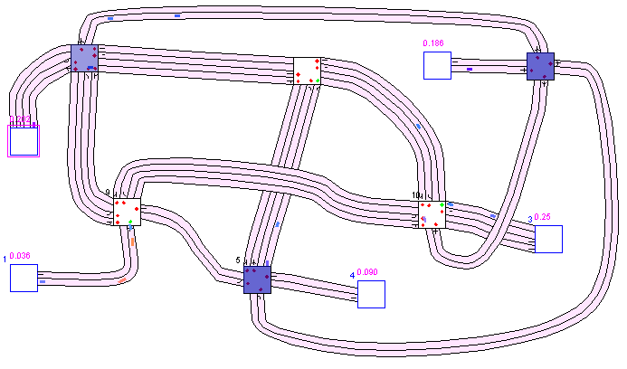
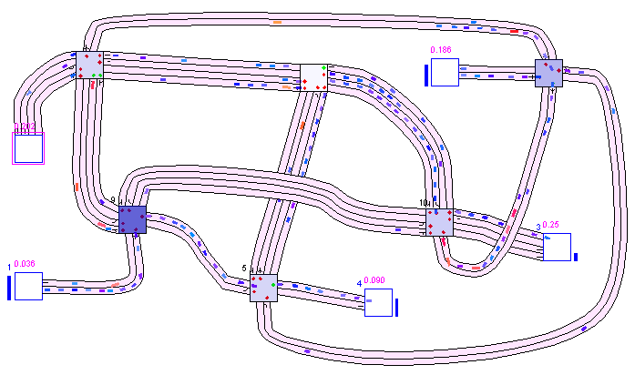

1. Editor
2. Simulator
3. Evaluation Tools
4. An Example Session
 a. Map Creation
a. Map Creation
 b. Traffic Simulation
b. Traffic Simulation
 c. Statistics Evaluation
c. Statistics Evaluation
5. Algorithms
Simulator Usage
- Start the Simulator and load our home brewn map "Simple".

- Advance the simulator one step. A few road users are spawning from the Edge Nodes.

- Run the simulation for a while. Traffic lights will begin to have an effect on the traffic, and eventually clogging points.
Notice the queue length indicators next to each edge node, and the colouring of junctions. These in-view statistics are showing few waiting road users outside the map, so we can conclude that we can "trust" the performance of algorithms.

- If the spawn values are too low or too high, the simulation will either run smoothly without effect from algorithms or clog up swiftly. Adjust some of the spawning values (for example: set the eastern edge nodes to low values, and the western ones to high values).
- Experiment with different TLC's, and see whether they have an effect on traffic flow. If change isn't obvious, you might have to run statistics to detect them.
- The effect of running Random TLC: deadlock.

- Relative Longest Queue TLC spreads traffic much better.

- Get to know the map if you haven't already in the previous section.
Notice that there are relatively less edge nodes, more ways to get to a destination, and that in the south-east more edge nodes are concentrated.
- Here, changing spawning frequencies can strongly influence traffic flow.
Setting them to 0.0 effectively eliminates incoming traffic from the edge node,
though road users will have the same chance to get that edge node as destination
when they spawn elsewhere.
Do not set the spawn frequency for the edge nodes in the south-east to high, and make their destination frequency more to the north-western edge node to spread traffic.
- Let's run a heavy algorithm. Select TC3 with co-learning, and set spawning values of about 0.3 for all edge nodes.
If you had a simple traffic controller previously selected, you will see big change in traffic flow.
More roads will be used and more road users will be moving at the same time.

- To oversee performance for a complex map, let's run some statistics.
After running a simulation, the Statistics will give an overview of its effectiveness with rush-hour traffic and show weak junctions in the infrastructure.